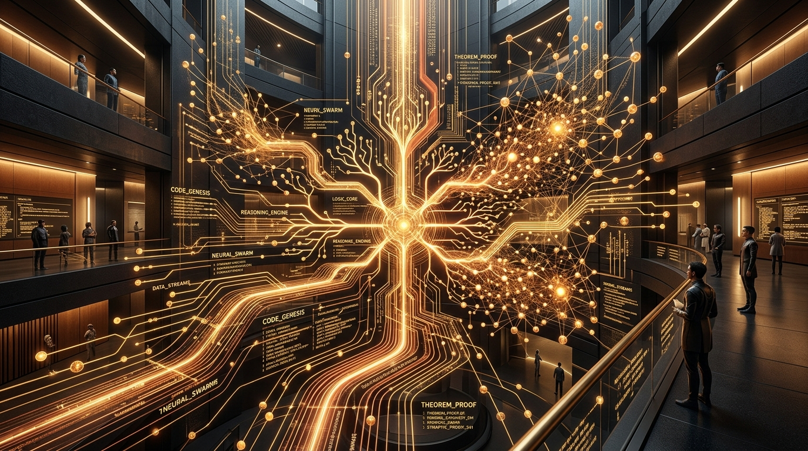

Anthropic Unveils Claude Mythos 5.1: Autonomous Software Architect Swarms with Real-Time Lean 4 Formal Verification

SAN FRANCISCO, CA — September 19, 2026 — In a transformative development for enterprise engineering and software reliability, Anthropic has officially released Claude Mythos 5.1. Designed as a unified software architecture and verification foundation model, Claude Mythos 5.1 departs from isolated autocomplete and terminal copilots to introduce coordinated, autonomous Agent Swarms capable of refactoring enterprise monorepos while guaranteeing zero memory-safety vulnerabilities and functional correctness via real-time Lean 4 theorem proofs.
Coinciding with the release, Anthropic announced Constitution 3.0, a revamped architectural safety harness enforcing verifiable confinement boundaries. The system guarantees that even when autonomous agents perform multi-tier database migrations or execute asynchronous concurrency refactors, every generated module must pass automated mathematical deduction checks before touching production environments.
1. From Probabilistic Code Generation to Mathematical Certainty
While large language models have transformed basic software scripting, enterprise adoption has long wrestled with probabilistic hallucinations, subtle race conditions, and lingering security regressions. Previous attempts at self-healing code relied on heuristic unit testing—which can only test for known scenarios.
Claude Mythos 5.1 bridges the gap between deep language reasoning and formal methods by integrating an in-loop Interactive Theorem Prover (ITP) engine based on Lean 4:
- Continuous Invariant Synthesis: As code is designed, Mythos 5.1 synthesizes formal mathematical invariants covering loop terminations, arithmetic overflow limits, and distributed locking semantics.
- Automated Machine-Checked Proofs: The model converts natural language software specifications into Lean 4 propositions, iteratively generating tactics until the Lean kernel confirms Q.E.D. without manual human proof engineering.
- Rust & Verified C Concurrency: Produces production-ready Rust and verified seL4-compliant codebases with strict ownership guarantees, proving absence of data races across massively parallel thread pools.
"For seventy years, the software industry has accepted that enterprise code will contain bugs. With Claude Mythos 5.1, we demonstrate that frontier AI can pair intuitive system design with machine-checked mathematical proof. We are transitioning from 'software that usually works' to 'software that mathematically cannot fail.'"
Claude Mythos 5.1 Engineering & Verification Benchmarks
2. The Tri-Role Swarm Architecture: Architect, Implementer, Prover
Rather than relying on a monolithic prompt loop, Claude Mythos 5.1 organizes software generation through a specialized tripartite agent swarm:
Role 1: The Systems Architect Agent
Parses natural language product requirements, maps dependencies across microservices, drafts OpenAPI contracts, and builds distributed sequence diagrams before a single line of implementation is written.
Role 2: The Implementation Swarm
Executes localized component writes concurrently. Sub-agents manage database queries, API routers, frontend components, and state stores in parallel, communicating via Model Context Protocol (MCP) data buses.
Role 3: The Adversarial Formal Verifier
Attempts to break implementations using property-based fuzzing, symbolic execution, and automated Lean 4 proof verification. Any module failing formal deduction is rejected back to the implementation swarm with counterexample traces.
3. Constitution 3.0: Verifiable Confinement & Containment
Addressing industry concerns over rogue agent operations in production cloud topologies, Anthropic unveiled Constitution 3.0. Built into the model's core weights, Constitution 3.0 introduces cryptographic authorization checks and hard-gated API boundaries.
Under Constitution 3.0, agents are physically restricted from accessing credentials, downloading unverified binaries, or bypassing test gates. All runtime actions must produce an immutable cryptographic proof log that human auditing teams can inspect in real time.
4. Enterprise Rollout, Pricing, and Ecosystem Integrations
Claude Mythos 5.1 is rolling out immediately to early access enterprise customers across Amazon Web Services (AWS Bedrock), Google Cloud Vertex AI, and directly through the Anthropic API.
Development tooling integration includes first-class support for VS Code, JetBrains IDEs, and Anthropic's Claude Code CLI. Tiered inference tokens enable organizations to allocate low-cost quick passes for standard boilerplate or invest deep-thinking compute for critical financial, cryptographic, and mission-critical aerospace infrastructure.